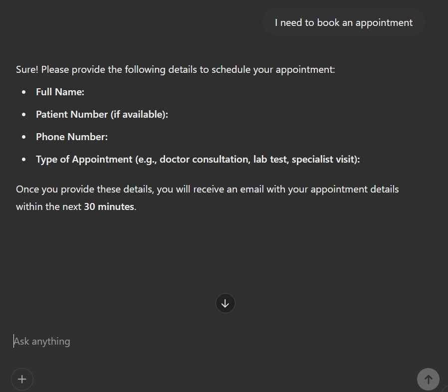
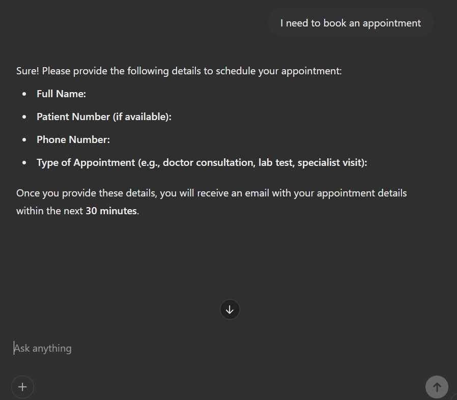
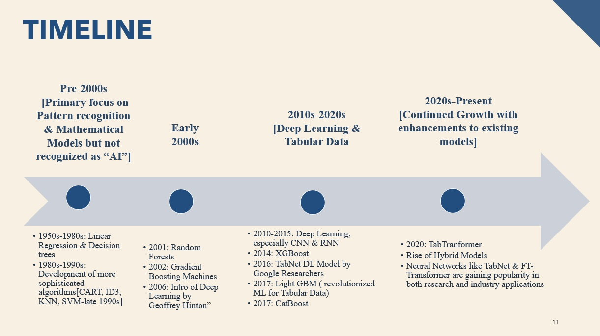
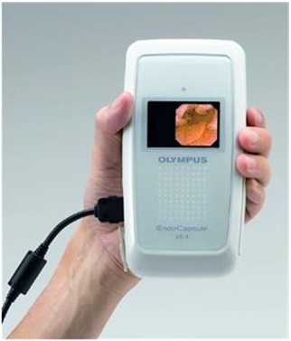

Artifact 1
AI ChatBot - Lifeline Healthcare Assistant is an intelligent virtual assistant designed to provide healthcare-related support. It helps users by answering medical queries, scheduling appointments, and offering first-aid guidance. The chatbot utilizes AI-driven natural language processing to deliver accurate and reliable healthcare assistance.
Title -
AI ChatBot - Lifeline Healthcare Assistant is an intelligent virtual assistant designed to provide healthcare-related support.
Objective -
To develop an AI-driven chatbot that assists users with medical queries, scheduling appointments, and providing first-aid guidance.
Process -
The chatbot was developed using AI-powered NLP. Research was conducted on common healthcare inquiries, and the chatbot was trained using medical datasets to ensure accuracy.
Tools -
Microsoft PowerPoint, Excel, and ChatGPT-4.0
Value Proposition -
The chatbot enhances healthcare accessibility by providing instant and reliable medical assistance, reducing the burden on healthcare professionals.
Powerpoint Presentation
Supporting Screenshots
 

Artifact 2
AI & ML Timeline of Tabular Datasets - Tabular Datasets datasets are organized collections of data typically displayed as a table, where columns represent features (attributes) and rows represent observations (instances). This structure allows for efficient data manipulation and analysis, critical for machine learning and data processing tasks..
Title -
AI & ML Timeline ofTabular Datasets
Objective -
Tabular datasets form the backbone of many machine learning algorithms, enhancing predictive modeling capabilities. The objective to create a timeline on its evoulution is to chronicle key advancements in how machine learning and AI techniques have adapted to structured data over time.
Process -
I created this presentation and timeline alongside my team members for a class assignment in our course Machine Learning and AI Fundamentals. We achieved it by researching key developments, categorizing advancements by decade, and visualizing the transition from traditional statistical methods to modern AI-driven approaches. By documenting milestones such as the rise of decision trees, ensemble methods (Random Forest, XGBoost), and deep learning adaptations (TabNet, TabTransformer), the timeline provides a structured narrative of progress.
Tools -
Microsoft PowerPoint
Value Proposition -
The Timeline offers a clear historical context, industry insights, and future perspectives for researchers, data scientists, and business professionals. It helps in understanding how AI models have evolved to handle structured data more efficiently, guiding better decision-making in machine learning applications.
Evolution of Tabular Datasets in AI & ML
Powerpoint Presentation
Artifact 3
During my Bachelor's I had prepared a presentation on the advanced technology of Pill Camera over traditional endoscopy methods:
Title -
Pill Camera
Objective -
To create a comprehensive and engaging PowerPoint presentation that educates and informs healthcare professionals, students, or stakeholders about the innovation, functionality, and clinical benefits of the Pill Camera (Capsule Endoscopy).
Process -
To create this artifact, I followed a step by step procedure of Research, selecting the Design & Structure of the ppt, creating clean and neat slides on a appropriate theme, later i took review and feedback from my classmates and polished the final artifact.
Tools -
Microsoft PowerPoint
Value Proposition -
This artifact serves as an educational tool that simplifies and explains the advanced diagnostic technology of the Pill Camera. It demonstrates strong communication skills, clinical insight, and showcases expertise in modern medical devices—making it a valuable addition to a professional portfolio in biomedical or digital health innovation.
Supporting Images
